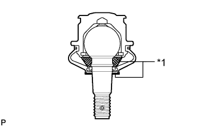
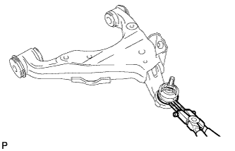
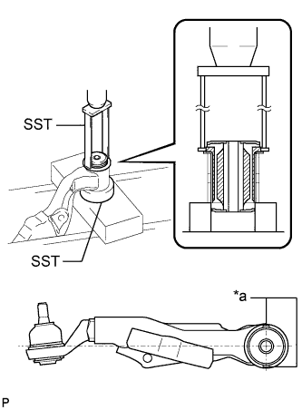
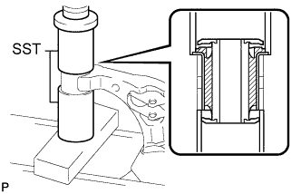

ПЕРЕДНИЙ НИЖНИЙ РЫЧАГ ПОДВЕСКИ > ПОВТОРНАЯ СБОРКА |
| 1. УСТАНОВИТЕ ПЫЛЕЗАЩИТНЫЙ ЧЕХОЛ ЛЕВОГО НИЖНЕГО ШАРОВОГО ШАРНИРА |
Наполните шаровой шарнир верхнего рычага универсальной консистентной смазкой.
|  |
Нанесите универсальную консистентную смазку в местах, указанных на рисунке.
| *1 | Универсальная консистентная смазка |
Установите пылезащитный чехол на нижний рычаг.
|  |
С помощью съемника стопорных колец установите установочное кольцо пылезащитного чехла.
| 2. УСТАНОВИТЕ ВТУЛКУ ЛЕВОГО НИЖНЕГО РЫЧАГА ПЕРЕДНЕЙ ПОДВЕСКИ № 2 |
|  |
С помощью SST и пресса запрессуйте новую втулку.
| *a | Установочный выступ втулки |
| 3. УСТАНОВИТЕ ВТУЛКУ ЛЕВОГО НИЖНЕГО РЫЧАГА ПЕРЕДНЕЙ ПОДВЕСКИ № 1 |
|  |
С помощью SST и пресса запрессуйте новую втулку.